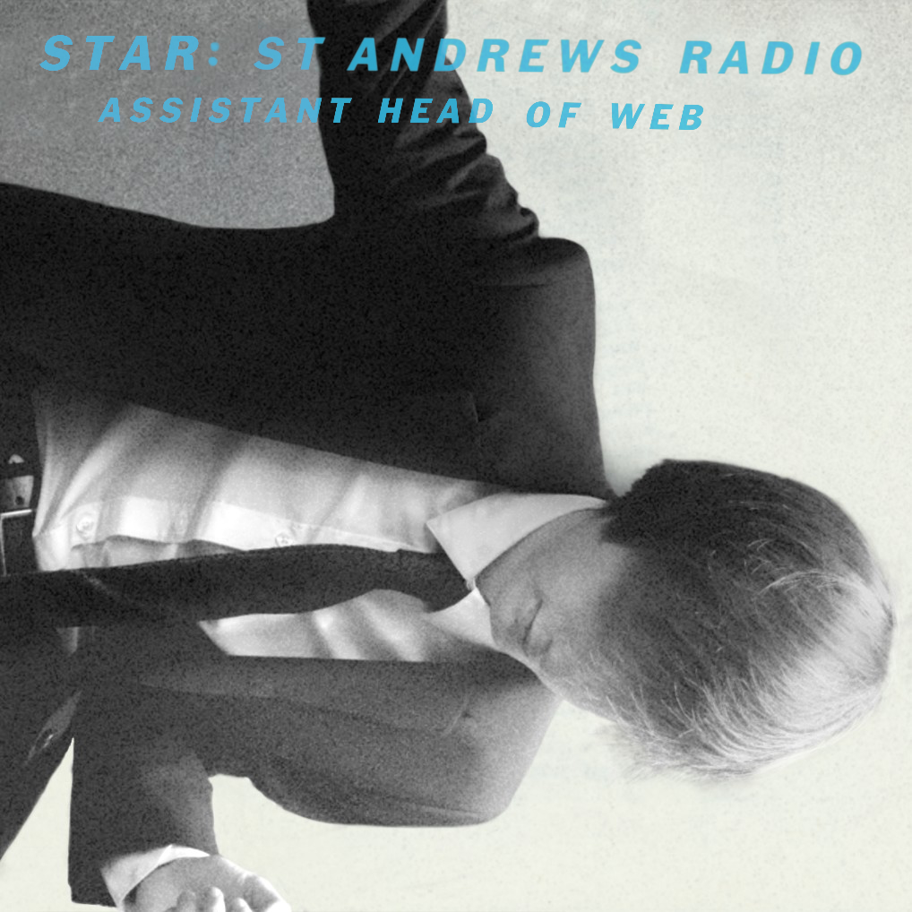
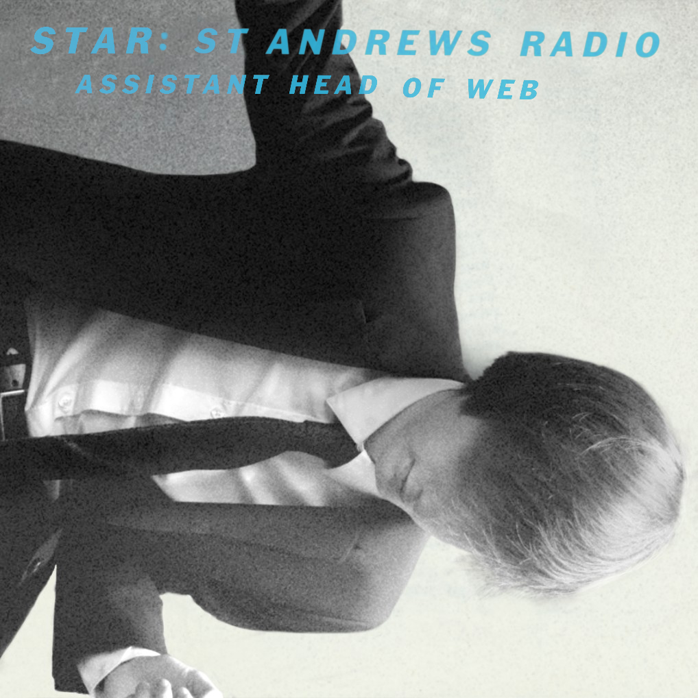

About Me
 

Hi, I'm Harris! I study Computer Science at the University of St Andrews and last year I recorded over 100,000 minutes of Spotify usage (thats just under 20% of the year). If we were to add YouTube, Tidal and live music we're probably in the region of 30%, so it's certainly safe to say I enjoy my music. My music library grows daily, with over 300 albums and EPs that I listen to regularly and over 1000 further tracks for a library that's now over 4000 songs total.
The photos above represent what I get up to in St Andrews when I'm not asleep or in labs. The middle photo is my committee photo for the radio station I work for, STAR (St Andrews Radio), where I'm currently the Head of Web having sat as the Assistant last year. The album cover I'm modelling is This is Happening by LCD Soundsystem, one of my favourite albums. The other two photos are taken at events that we run at the station where we have local bands playing in the Union on a Saturday night. Some of my favourite nights in St Andrews have happened at Sounds of Sandys, and the music is always great!
My aim for this blog is to showcase music that I enjoy, detailing why I like listening to it and why you should give it a listen too. Also, making websites is fun and any excuse to listen to music works for me. I'll post when a new showcase goes live here so make sure to drop a follow.